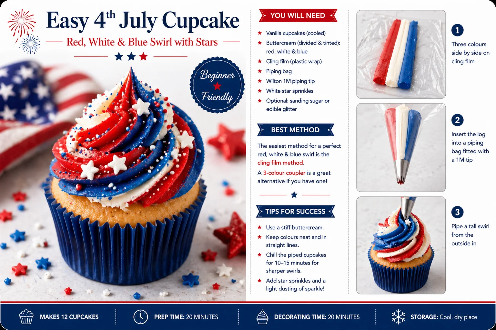
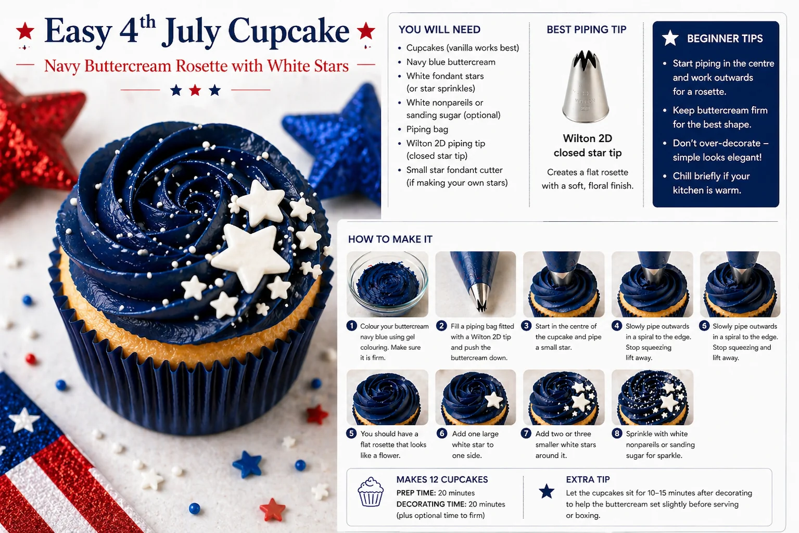

The 4th of July makes a natural theme for a summer party in the UK — whether you are hosting American friends, planning an Americana-themed celebration, or simply love the boldness of red, white and blue on a dessert table. The colour combination is one of the most striking you can use, and it translates beautifully to cupcakes.
Both designs in this guide are achievable at home. With a piping bag, a couple of piping tips and some coloured buttercream, you can produce cupcakes that look polished and party-ready — no specialist skills required.
This guide covers two designs:
- Red, white and blue buttercream swirl cupcakes
- Navy buttercream rosette cupcakes with white stars
Why These Two Designs
Some cupcake designs are much simpler in person than they appear in photographs. Both of these have been chosen because they are:
- Beginner-friendly and realistic to make at home
- Easy to batch-make in quantity
- Built around basic tools — no specialist equipment needed
- Suitable for cupcake boxes and styled party tables
- Visually distinct from each other, which creates a more interesting cupcake collection
The red, white and blue swirl gives height and colour impact. The navy rosette gives a polished, more refined finish. Together they create a balanced cupcake collection without making the decorating process complicated.
Red, White & Blue Buttercream Swirl Cupcake

This is the showstopper of the two designs. A tall swirl of red, white and blue buttercream, finished with white star sprinkles — striking from a distance and straightforward once you know the method.
What You Will Need
| Item | Purpose |
|---|---|
| Vanilla cupcakes | A simple base that works well with colourful decorations |
| White buttercream | One of the three swirl colours |
| Red buttercream | For the patriotic colour palette |
| Navy or royal blue buttercream | For the blue swirl section |
| Disposable piping bag | To hold the buttercream |
| Cling film | For the three-colour swirl method |
| Wilton 1M piping tip | Creates the tall open-star swirl |
| White star sprinkles | 4th of July decoration |
| Red, white and blue sprinkles | Optional extra decoration |
Best Piping Tip for Design 1
Use a Wilton 1M open star tip. This creates a tall swirl with strong ridges and gives a bakery-style finish without needing complicated piping technique. A similar large open-star nozzle will also work if you do not have the Wilton 1M.
How to Make the Three-Colour Swirl
The easiest method for beginners is the cling film method.
- Lay a sheet of cling film flat on your work surface.
- Place three lines of buttercream side by side: one red, one white, one blue. Keep them parallel rather than blending them together.
- Roll the cling film into a sausage shape so the three colours sit neatly beside each other. Twist both ends, then snip one end of the buttercream log.
- Place the log into a piping bag fitted with the Wilton 1M tip.
- Hold the piping bag above the cupcake. Start at the outside edge and pipe in a circle, working inwards and slightly upwards to create a tall swirl. Finish with a centre peak.
- Decorate with white star sprinkles while the buttercream is still soft.
Alternative Method
A three-colour coupler connects three separate piping bags into one nozzle so you can pipe all three colours simultaneously. It gives cleaner colour separation but involves more set-up. For beginners, the cling film method is usually easier and less messy.
Navy Buttercream Rosette with White Stars

This is the more refined of the two designs. It uses a single colour of buttercream, which makes it simpler to pipe than the three-colour swirl, but the result looks elegant and considered — particularly when paired with white fondant stars.
What You Will Need
| Item | Purpose |
|---|---|
| Vanilla cupcakes | A simple base |
| Navy blue buttercream | Main rosette colour |
| White fondant stars or white star sprinkles | Decoration |
| White nonpareils or sanding sugar | Optional sparkle |
| Disposable piping bag | To hold the buttercream |
| Wilton 2D piping tip | Creates the rosette |
| Small star fondant cutter | If making your own stars (PME plunger cutter works well) |
Best Piping Tip for Design 2
Use a Wilton 2D closed star tip. This creates a soft, rose-style rosette. The Wilton 1M can also work, but the 2D gives a more floral and elegant finish — which suits the navy colour well.
How to Make the Navy Rosette
- Colour the buttercream. Use gel food colouring rather than liquid — liquid colouring can soften the buttercream and affect how well it holds its shape. Blue buttercream often deepens as it rests, so colour it a few hours ahead for a stronger, more even result.
- Fill the piping bag. Fit a piping bag with the Wilton 2D tip. Spoon the navy buttercream into the bag and push it down toward the nozzle. Twist the top to remove air pockets.
- Pipe the rosette. Hold the bag straight above the centre of the cupcake. Start in the centre and pipe a small curl, then spiral outward toward the edge to create a flat rose effect. Stop squeezing before lifting the bag so the end of the rosette looks neat. This is the opposite of a tall swirl: for a rosette, you start in the centre and finish at the outside edge.
- Add the stars. Place one larger white fondant star to one side of the rosette. Add two or three smaller stars around it. Scatter a few white nonpareils or pearl sprinkles over the surface for a firework-style sparkle.
- Let the cupcakes firm. Leave them for 10–15 minutes before boxing, particularly if your kitchen is warm. This helps the buttercream hold its shape during transport.
The Key Difference Between the Two Methods
The two designs are piped in opposite directions — this is the most important thing to get right.
| Design | Start Piping | Finish Piping | Result |
|---|---|---|---|
| Red, white & blue swirl | Outside edge | Centre peak | Tall cupcake swirl |
| Navy rosette | Centre | Outer edge | Flat rose effect |
If your navy rosette is coming out looking like a tall swirl, you are starting from the outside instead of the centre. Start every rosette from the middle and you will get the flat rose shape.
Putting Together a Cupcake Box
A mixed cupcake box will look more interesting than a single design. The tall swirls add height and movement, while the navy rosettes add a more considered, polished finish.
Box of 12:
| Quantity | Design |
|---|---|
| 6 | Red, white and blue swirl cupcakes |
| 6 | Navy rosette cupcakes with white stars |
Box of 6:
| Quantity | Design |
|---|---|
| 3 | Red, white and blue swirl cupcakes |
| 3 | Navy rosette cupcakes with white stars |
Colour Palette for a Premium Look
The exact shades you choose make a significant difference to the final result. Colours that are too vivid or cartoon-like can look cheap alongside fondant stars and sprinkles. These shades work better:
| Colour | Best Use |
|---|---|
| Deep navy | Rosettes, buttercream and cupcake cases — looks more premium than bright blue |
| Rich red | Swirls, sprinkles and accents |
| Ivory white | Buttercream and star decorations — softer than pure white |
| Silver | Optional sanding sugar, pearls or edible glitter |
| Gold | Optional luxury accent, used sparingly |
Beginner Tips for Better Results
- Use firm buttercream. If the piping collapses, the buttercream is too soft. Add a little more icing sugar or chill it for 5–10 minutes, then beat briefly before piping.
- Do not overfill the piping bag. A half-full bag is easier to control than a full one.
- Practise first. Pipe one or two swirls onto baking paper before decorating the actual cupcakes. Scrape it off and reuse the buttercream.
- Keep colours side by side. For the three-colour swirl, lay the buttercream lines parallel in the cling film — blending them together will produce a muddy brown rather than distinct stripes.
- Firm fondant stars before placing. Let them dry for a few minutes before pressing them onto buttercream, or they will sink.
- Colour ahead for navy. Blue gel colouring deepens as it rests. Colour your buttercream a few hours ahead for a stronger, more even shade.
- Navy cupcake cases pull the whole design together. Using matching cases makes a noticeably difference to how polished the finished box looks.
Your Questions Answered
Can you make these cupcakes the day before?
Yes. Both designs can be made the day before and stored in a covered cupcake box or airtight container in a cool, dry place. Avoid placing fondant decorations in a very humid fridge, as fondant can become sticky. If your kitchen is warm, you can chill the cupcakes briefly, but avoid long fridge storage once fondant stars are in place.
How do you transport cupcakes safely?
Use a proper cupcake box with inserts so the cupcakes cannot move around in transit. The navy rosette cupcakes are easier to transport than the tall swirls because they are flatter. Allow the buttercream to firm for 10–15 minutes before boxing. Keep cupcakes out of direct sunlight and avoid leaving them in a warm car, especially in summer.
What if the buttercream colours look weak?
Gel colours deepen as they rest — a colour that looks pale when you first mix it will usually intensify over a few hours. If you need to colour and use the buttercream immediately, add a little more gel and mix thoroughly. Always use gel colouring rather than liquid for buttercream: liquid colouring does not give a strong enough result and can soften the mixture.
What if the rosette looks like a swirl?
You are likely starting from the outside edge rather than the centre. For a rosette, always begin piping in the middle of the cupcake and spiral outward. If you start at the edge and work inward, you will produce a traditional swirl shape instead.
Useful Tools
- Wilton 1M open star piping tip
- Wilton 2D closed star piping tip
- Disposable piping bags
- Cling film
- Navy blue gel food colouring
- Red gel food colouring
- White star sprinkles
- PME star plunger cutter set (for fondant stars)
- Navy cupcake cases
- White nonpareils or sanding sugar
Both designs work well as a cupcake collection precisely because they are different from each other. The tall swirls create colour and movement; the navy rosettes bring structure and refinement. Together, they make a 4th of July dessert table that looks deliberately styled rather than assembled in a hurry.
If you are planning a styled party table or dessert display and would like to see more cupcake ideas, our fondant cupcake ideas guide covers a range of celebration designs. Or if you would like us to style your celebration table, get in touch — we work across Sittingbourne and all of Kent.
Planning a Themed Celebration?
We style dessert tables, balloon displays and full party setups across Sittingbourne and Kent. Tell us about your event and we will design something beautiful.